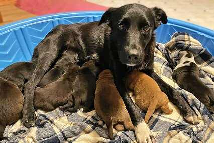

"Helping Animals Find Their Forever Homes"
Most Recent
Once Covered In Cactus Spines, 'Cholla Charlie' Is Now Happy, Healthy, and Adopted

Read more ⇾
Foster Dog Who Lost Her Own Litter Becomes Doting Surrogate Mother to 10 Orphaned Puppies

Sweet Pepper sprang into action right when these pups needed her the most.
Read more ⇾
More stories...